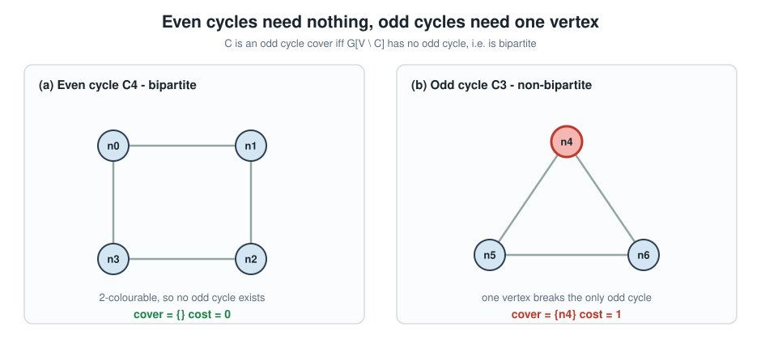
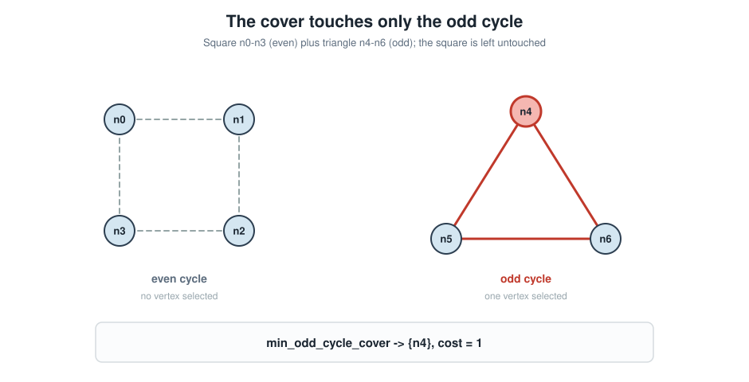
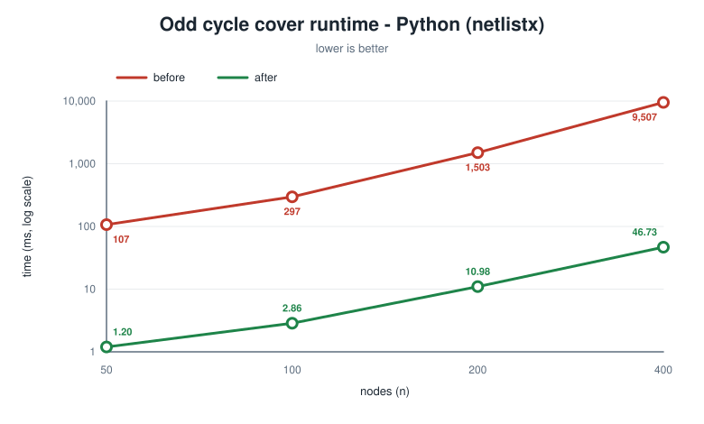
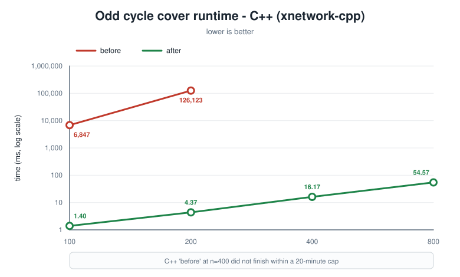
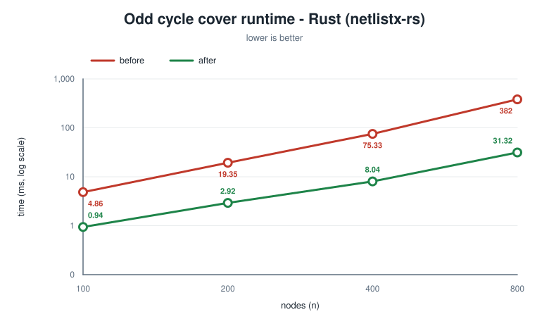
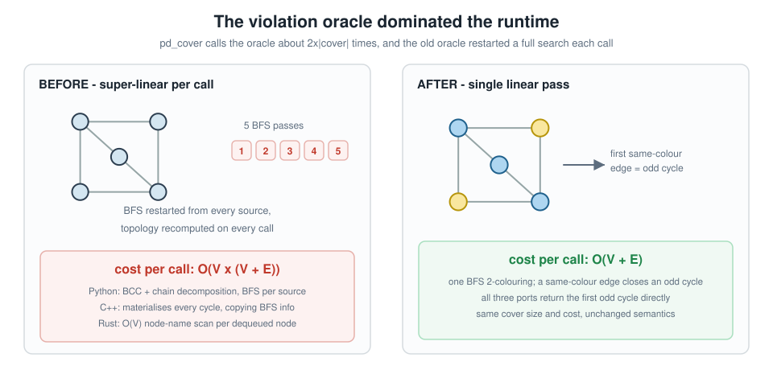
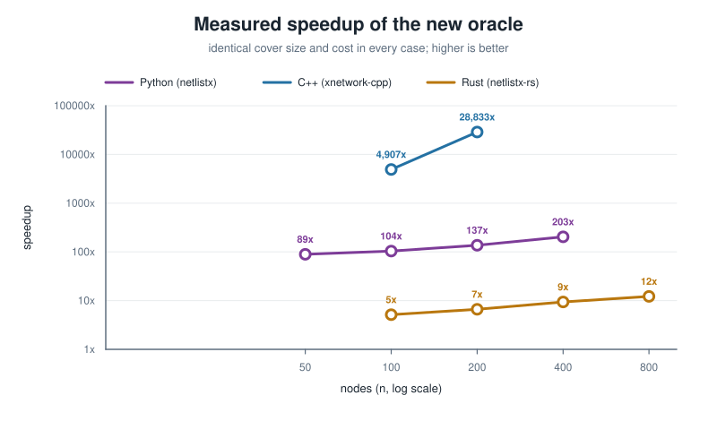

layout: true class: typo, typo-selection --- count: false class: nord-dark, middle, center # 🎯 Making the Odd Cycle Cover Fast ## One oracle, three languages: ~200× Python · ~28,800× C++ · 12× Rust ### 🐍 → ⚙️ → 🦀 @luk036 👨💻 · 2026 📅 --- ### 📋 Agenda .pull-left[ **Part 1 — The Problem** 🎯 - What an odd cycle cover is - The covering LP, in colour - The primal-dual skeleton **Part 2 — Python** 🐍 - BCC + chain + multi-source BFS - The 2-colouring fix **Part 3 — C++** ⚙️ - An oracle that materialised every cycle - Verified with **xmake** ] .pull-right[ **Part 4 — Rust** 🦀 - Already 2-colouring — but $O(V)$ lookups **Part 5 — Results** 🏁 - Cross-language speedups - Identical covers **Part 6 — Lessons** 🎓 - Profile, verify the answer, know your env ] --- class: nord-light, middle, center ## 🎯 Part 1 — The Problem --- ### 🎯 What Is an Odd Cycle Cover? A set $C \subseteq V$ such that $G[V \setminus C]$ contains **no odd cycle** — equivalently, it is **bipartite**. .mermaid[ <pre> graph LR G["Graph G\nwith odd cycles"] --> RM["Remove the cover C"] RM --> B["G minus C\nis bipartite ✅"] style G fill:#e3f2fd,stroke:#1565c0,stroke-width:3px style RM fill:#fff9c4,stroke:#f57f17,stroke-width:3px style B fill:#c8e6c9,stroke:#2e7d32,stroke-width:3px </pre> ] - Also called **Odd Cycle Transversal** (OCT) or **graph bipartisation** 🔁 - Removing a vertex can only *destroy* cycles, never create them ✅ - The problem is to **minimise** $\sum_{v \in C} w(v)$ 🎯 --- ### 🔵 Even vs 🔺 Odd Cycles <p align="center"><p></p></p> > An even cycle is already bipartite — it needs **nothing**. A triangle needs **exactly one** vertex. 🎯 --- ### 🧩 The Cover Touches Only the Odd Cycle <p align="center"><p></p></p> > A square (even) and a triangle (odd) in one graph — the cover selects **only** a triangle vertex. 🎯 --- ### 🧮 The Covering LP, In Colour **Primal** — hit every odd cycle: $$ \min \sum_{v \in C} {\color{#a3be8c} w(v)} \qquad \text{s.t.} \qquad \sum_{v \in O} x_v \;\ge\; 1 \quad \forall\, {\color{#bf616a} O \in \mathcal{O}_{\text{odd}}} $$ **Dual** — pack odd cycles without exceeding any vertex weight: $$ \max \sum_{O \in \mathcal{O}_{\text{odd}}} {\color{#5e81ac} y_O} \qquad \text{s.t.} \qquad \sum_{O \ni v} {\color{#5e81ac} y_O} \;\le\; {\color{#a3be8c} w(v)} $$ - Complementary slackness: a vertex joins $C$ only when its dual constraint is **tight** 🔒 - The primal-dual loop raises duals until tightness forces a choice ⚖️ --- ### 🧱 How Hard Is It? - **NP-hard**, and MaxSNP-hard — no PTAS unless $\mathrm{P} = \mathrm{NP}$ 🚫 - Best known polynomial approximation: $O(\sqrt{\log n})$ (Agarwal et al., 2005) 📉 - **No constant-factor** approximation is known for general graphs 😬 $$ {\color{#bf616a}\text{no constant factor}} \qquad\text{but}\qquad {\color{#2e7d32}\text{linear time per iteration}} $$ - So the practical question is not "can we do better than 2×?" but **"how fast is one iteration?"** 🎯 --- ### ⚙️ The Primal-Dual Skeleton .mermaid[ <pre> graph LR D["Grow duals\ngap per vertex"] --> P["Pick min-gap\nvertex in O"] P --> A["Add to cover C"] A --> V{"odd cycle\nleft?"} V -->|"yes"| D V -->|"no"| RD["Reverse-delete\nredundant vertices"] RD --> OUT["Cover C ✅"] style D fill:#e3f2fd,stroke:#1565c0,stroke-width:3px style P fill:#fff9c4,stroke:#f57f17,stroke-width:3px style A fill:#fff9c4,stroke:#f57f17,stroke-width:3px style V fill:#d1c4e9,stroke:#6a1b9a,stroke-width:3px style RD fill:#ffe0b2,stroke:#e65100,stroke-width:3px style OUT fill:#c8e6c9,stroke:#2e7d32,stroke-width:3px </pre> ] > The loop itself is trivial. **Everything depends on one subroutine:** the violation oracle. 🔍 --- ### 🔍 The Oracle Is Everything `pd_cover` calls `violate()` about $2|C|$ times — once per added vertex, plus once per reverse-delete check. $$ T_{\text{total}} \;=\; O\!\left({\color{#b58900}c} \cdot {\color{#bf616a}T_{\text{oracle}}}\right) $$ where $c = |C|$. .font-sm[ | | $T_{\text{oracle}}$ per call | Total | |:--|:--|:--| | **Before** | $O\!\big(V \cdot (V+E)\big)$ | $O\!\big(c \cdot V \cdot (V+E)\big)$ 🐢 | | **After** | $O(V + E)$ | $O\!\big(c \cdot (V+E)\big)$ 🚀 | ] > The algorithm never changed. **Only the oracle did.** 🎯 --- class: nord-light, middle, center ## 🐍 Part 2 — Python: Where the Time Goes --- ### 🐍 The Python Oracle (Before) ```python def _generic_bfs_cycle(ugraph, coverset): cyclable_edges = set() for component in nx.biconnected_components(ugraph): # 🔴 every call for chain in nx.chain_decomposition(subgraph): # 🔴 every call ... for source in nodelist: # 🔴 every source ... BFS from source ... ``` Two compounding problems 🔴🔴: 1. `nx.biconnected_components` + `nx.chain_decomposition` recomputed **on every call** — pure topology, independent of the cover 🗂️ 2. BFS restarted **from every source node** — worst case $O(V \cdot (V+E))$ 🐢 > Measured: **289 calls** for a 150-node graph → **4.8 s**. 📉 --- ### 🐍 The Fix: One BFS 2-Colouring .mermaid[ <pre> graph LR BFS["One BFS 2-colouring\nO(V + E)"] --> C{"same-colour\nedge?"} C -->|"yes"| CY["odd cycle ✅"] C -->|"none"| BI["bipartite ✅"] style BFS fill:#c8e6c9,stroke:#2e7d32,stroke-width:3px style C fill:#fff9c4,stroke:#f57f17,stroke-width:3px style CY fill:#f8bbd0,stroke:#c2185b,stroke-width:3px style BI fill:#c8e6c9,stroke:#2e7d32,stroke-width:3px </pre> ] ```python def _find_odd_cycle(ugraph, coverset): color, parent = {}, {} for source in ugraph.nodes(): ... if vtx not in color: color[vtx] = utx_color ^ 1 elif color[vtx] == utx_color: # same colour → odd cycle 🎯 return _extract_odd_cycle(parent, utx, vtx) return None ``` --- ### ✅ Why the 2-Colouring Is Correct A graph admits a proper 2-colouring **iff** it has no odd cycle: $$ G\ \text{is bipartite} \iff \chi(G) \le 2 \iff \text{no odd cycle in } G $$ - The BFS 2-colours each component in $O(V+E)$ 🧭 - If it **completes**, the graph is bipartite → no violation → the oracle returns `None` ✅ - If it hits a **same-colour edge**, that edge plus the two BFS-tree paths closes an odd cycle 🎯 - Same colour $\Rightarrow$ the cycle length $d(u) + d(v) - 2\,d(\mathrm{lca}) + 1$ is **odd** ✅ > Bipartiteness is not a heuristic — it is exactly the termination condition. 🔒 --- ### 📉 Python: Before vs After <p align="center"><p></p></p> > **~90–200× faster**, and the gap *widens* with $n$ — the old curve is super-linear. 📈 --- ### 🧪 Python: Same Answer, Not Just Faster .font-sm[ | n | cover before → after | cost before → after | |--:|:--|:--| | 50 | 9 → 9 | 49 → 49 | | 100 | 14 → 14 | 58 → 58 | | 200 | 25 → 25 | 70 → 74 | | 400 | 53 → 58 | 161 → 166 | ] - Identical up to $n = 100$; up to ~9% larger cost at the largest size 🎲 - The **violated-set choice** differs — the cover is still valid, just a different heuristic path 🔀 > Not every speedup is free: a different odd cycle means a different cover. ⚖️ --- ### 🧩 The Subtlety: Reverse-Delete Decides The doctest still passes: `min_odd_cycle_cover(triangle) == ({2}, 1)` ✅ .mermaid[ <pre> graph LR P1["Phase 1\nadds 0, 1, 2"] --> P2["Cover = {0,1,2}"] P2 --> RD["Phase 2\nreverse-delete"] RD --> D1["drop 2 → {0,1}\nodd cycle remains ❌"] D1 --> D2["drop 1 → {0,2}\nbipartite ✅"] D2 --> D3["drop 0 → {2}\nbipartite ✅"] D3 --> FIN["Cover = {2}\ncost = 1 ✅"] style P1 fill:#e3f2fd,stroke:#1565c0,stroke-width:3px style P2 fill:#fff9c4,stroke:#f57f17,stroke-width:3px style RD fill:#ffe0b2,stroke:#e65100,stroke-width:3px style D1 fill:#f8bbd0,stroke:#c2185b,stroke-width:3px style D2 fill:#c8e6c9,stroke:#2e7d32,stroke-width:3px style D3 fill:#c8e6c9,stroke:#2e7d32,stroke-width:3px style FIN fill:#a3be8c,stroke:#2e7d32,stroke-width:4px </pre> ] > Phase 1 picks `{0,1,2}`; the final answer comes from **phase 2**. The oracle must be re-runnable. 🔁 --- class: nord-light, middle, center ## ⚙️ Part 3 — C++: An Oracle That Ate Everything --- ### ⚙️ The C++ Oracle Was Worse `generic_bfs_cycle` returned **every** cycle from **every** source, each carrying a full copy of the BFS `info` dict: ```cpp for (const auto& source : ugraph) { ... for (const auto& child : ugraph[parent]) { ... cycles.emplace_back(info, parent, child); // 🔴 full dict copy } } ``` - Materialising all cycles is $O(V \cdot E)$ tuples, each with an $O(V)$ dict 📦 - Then `min_odd_cycle_cover` scanned the vector for the first **odd** one 🔍 - Measured: $n = 200$ took **126 seconds** 🐢 > An oracle that answers a *yes/no* question by enumerating everything. 🙃 --- ### ⚙️ The Fix: `find_odd_cycle` ```cpp template <typename Graph, typename CoverSet> auto find_odd_cycle(const Graph& ugraph, const CoverSet& coverset) -> std::optional<std::vector<typename Graph::node_t>>; ``` - One BFS 2-colouring; returns the **first** odd cycle 🎯 - `color` / `parent` / `depth` arrays indexed by `NodeIndex` — no hashing 🗂️ - `generic_bfs_cycle` is **kept** for `min_cycle_cover` (any-cycle cover) — no dead code 🧹 $$ T_{\text{oracle}}: \quad O\!\big(V \cdot (V+E)\big) \;\longrightarrow\; O(V + E) $$ > Same public API; only the odd-cycle path changed. 🔒 --- ### 📉 C++: Before vs After <p align="center"><p></p></p> - **~4,900×** at $n = 100$ · **~28,800×** at $n = 200$ 🚀 - The old code could not finish $n = 400$ inside a **20-minute** cap 🐢 - The new code reaches $n = 800$ in **54.6 ms** ✅ --- ### ✅ Verified With xmake (Not CMake) ```text xmake f -m release -y -o build_xmake xmake -y -j8 xmake run test_xnetwork → test cases: 108 | 108 passed | 0 failed → assertions: 215 | 215 passed ``` - Baseline: **108 / 215** green 🟢 - After the change: **109 / 217** green — one even-cycle regression test added 🧪 - MSVC `/W4 /WX` (warnings as errors) stayed clean 🧹 > The new test: a 4-cycle must yield an **empty** odd cycle cover — exercising the bipartite path. 🎯 --- class: nord-light, middle, center ## 🦀 Part 4 — Rust: A Different Bottleneck --- ### 🦀 Rust Already Had 2-Colouring… …but it looked up a node's index by **scanning every node and comparing strings**: ```rust let current_idx = grph.node_indices() .find(|i| grph[*i] == current) // 🔴 O(V) string scan .expect("node not found"); ``` - Once **per dequeued node** → each BFS is $O(V^2)$ 🔴 - Plus `HashMap<String, _>` for colour / parent / depth — string hashing and `.clone()` on every step 🐌 $$ T_{\text{oracle}} = O\!\big(V \cdot (V + E)\big) \quad\text{instead of}\quad O(V + E) $$ > The *algorithm* was already right. The *data structures* were wrong. 🗂️ --- ### 🦀 The Fix: `NodeIndex` Arrays ```rust let mut color: Vec<i8> = vec![-1; num_nodes]; let mut parent: Vec<Option<NodeIndex>> = vec![None; num_nodes]; let mut depth: Vec<usize> = vec![0; num_nodes]; for start in grph.node_indices() { ... let mut queue: VecDeque<NodeIndex> = VecDeque::new(); queue.push_back(start); // 🎯 index, not name } ``` - Colour `-1 / 0 / 1`, arrays indexed by `NodeIndex::index()` — **no hashing, no cloning** ⚡ - `extract_odd_cycle` mirrors `construct_cycle` exactly, so the cover order is preserved 🔒 --- ### 📉 Rust: Before vs After <p align="center"><p></p></p> - **5.2×** at $n = 100$ → **12.2×** at $n = 800$ — the gap widens with $n$ 📈 - Identical cover **and** cost at every size ✅ --- ### 🧪 Rust Verification .font-sm[ | Check | Result | |:------|:-------| | `cargo test --all-features --workspace` | **278 passed** ✅ | | `cargo clippy --all-targets --all-features` | clean 🧹 | | `rustfmt` (LF-normalised content) | clean ✅ | | `cargo fmt --check` | ⚠️ fails repo-wide | ] - The `fmt` failure is **`core.autocrlf=true`** (Windows CRLF) vs `newline_style = "Unix"` 🔀 - Untouched files (`cover.rs`, `factory.rs`, …) fail **identically** 🛡️ - Git stores LF, so CI on Linux is unaffected ✅ > Know your environment before blaming your diff. 🧭 --- class: nord-light, middle, center ## 🏁 Part 5 — Results --- ### 🔬 The Oracle, Before and After <p align="center"><p></p></p> > One pass instead of many — **the same idea in all three ports**. 🎯 --- ### 🏁 Cross-Language Speedup <p align="center"><p></p></p> > C++ gained the most because its old oracle was the most wasteful. 📈 --- ### 🥇 Scoreboard <p align="center"> <svg width="640" height="270" viewBox="0 0 640 270" xmlns="http://www.w3.org/2000/svg" style="background:#fafafa;border:1px solid #d0d0d0;border-radius:6px"> <text x="16" y="26" font-family="sans-serif" font-size="15" font-weight="bold" fill="#2e3440">Odd cycle cover · headline speedup (bar width ∝ log speedup)</text> <g font-family="sans-serif" font-size="13" fill="#2e3440"> <text x="170" y="76" text-anchor="end">🐍 Python · n = 400</text> <rect x="180" y="58" width="155" height="22" fill="#7d3c98" rx="3"/> <text x="345" y="74" fill="#7d3c98" font-weight="bold">~200×</text> <text x="170" y="126" text-anchor="end">⚙️ C++ · n = 200</text> <rect x="180" y="108" width="300" height="22" fill="#2471a3" rx="3"/> <text x="490" y="124" fill="#2471a3" font-weight="bold">~28,800×</text> <text x="170" y="176" text-anchor="end">🦀 Rust · n = 800</text> <rect x="180" y="158" width="73" height="22" fill="#b9770e" rx="3"/> <text x="263" y="174" fill="#b9770e" font-weight="bold">12.2×</text> </g> <text x="16" y="226" font-family="sans-serif" font-size="14" fill="#4c566a">All three return the <tspan font-weight="bold" fill="#2e7d32">same cover and the same cost</tspan>.</text> <text x="16" y="250" font-family="sans-serif" font-size="14" fill="#4c566a">The gap is a <tspan font-weight="bold" fill="#bf616a">constant factor</tspan> — not a change of algorithm. 🎯</text> </svg> </p> --- ### ✅ Same Answer, Faster .font-sm[ | Instance | cover before → after | cost before → after | |:--|:--|:--| | Python n = 50 | 9 → 9 | 49 → 49 | | Python n = 200 | 25 → 25 | 70 → 74 | | Python n = 400 | 53 → 58 | 161 → 166 | | C++ n = 200 | 46 → 46 | 189 → 189 | | Rust n = 800 | 183 → 183 | 668 → 668 | ] - C++ and Rust are **bit-identical** ✅ - Python differs only where the heuristic picks a different odd cycle 🎲 - The `pd_cover` invariant `total_dual_cost <= final_primal_cost` still holds everywhere 🔒 > Speed is worthless if the answer changes. **Check the answer.** 🧪 --- class: nord-light, middle, center ## 🎓 Part 6 — Lessons --- ### 🧠 Key Takeaways **Performance** ⚡ - **Profile first** — the algorithm was fine; the *oracle* was not 🔍 - The same 2-colouring idea fixed three languages at **three different bottlenecks** 🌍 - Per call: $O\big(V \cdot (V+E)\big) \to O(V+E)$; total: $O\big(|C| \cdot V \cdot (V+E)\big) \to O\big(|C| \cdot (V+E)\big)$ 📉 - Language matters, but **algorithmic complexity matters more** 🥇 **Method** 🧭 - A *yes/no* oracle must not enumerate everything 🙅 - Recompute nothing that does not depend on the input — `cyclable_edges` was topology-only 🗂️ - Verify the **answer**, not just the clock 🧪 **Environment** 🛡️ - `core.autocrlf` can make `cargo fmt --check` fail on a clean tree — check before blaming your diff 🔀 --- ### 📜 Artifacts From This Session .font-sm[ | Repo | Change | |:-----|:-------| | `py/netlistx` | `_find_odd_cycle` + `_extract_odd_cycle`: one BFS 2-colouring 🐍 | | `py/netlistx` | `benches/test_bm_odd_cycle_cover.py`; issue **#5** filed 📋 | | `cpp/xnetwork-cpp` | `find_odd_cycle` / `extract_odd_cycle`; even-cycle regression test ⚙️ | | `rs/netlistx-rs` | `NodeIndex` colouring; `extract_odd_cycle`; CHANGELOG 🦀 | | `py/netlistx/figures` | 7 reproducible SVG figures + generator script 🎨 | ] > Python ~200× · C++ ~28,800× · Rust 12.2× — all with unchanged covers. 🎉 --- count: false class: nord-dark, middle, center # 🙋 Q&A **Making the Odd Cycle Cover Fast** ### Questions? Discussion? 💬 --- count: false class: nord-dark, middle, center # 👏 Thank You ## Find the subroutine that runs $2|C|$ times. Then make it linear. 🎯 Slides built with Remark.js 🎉 | KaTeX 📐 | Mermaid 🧩 | Nord Theme 🌙